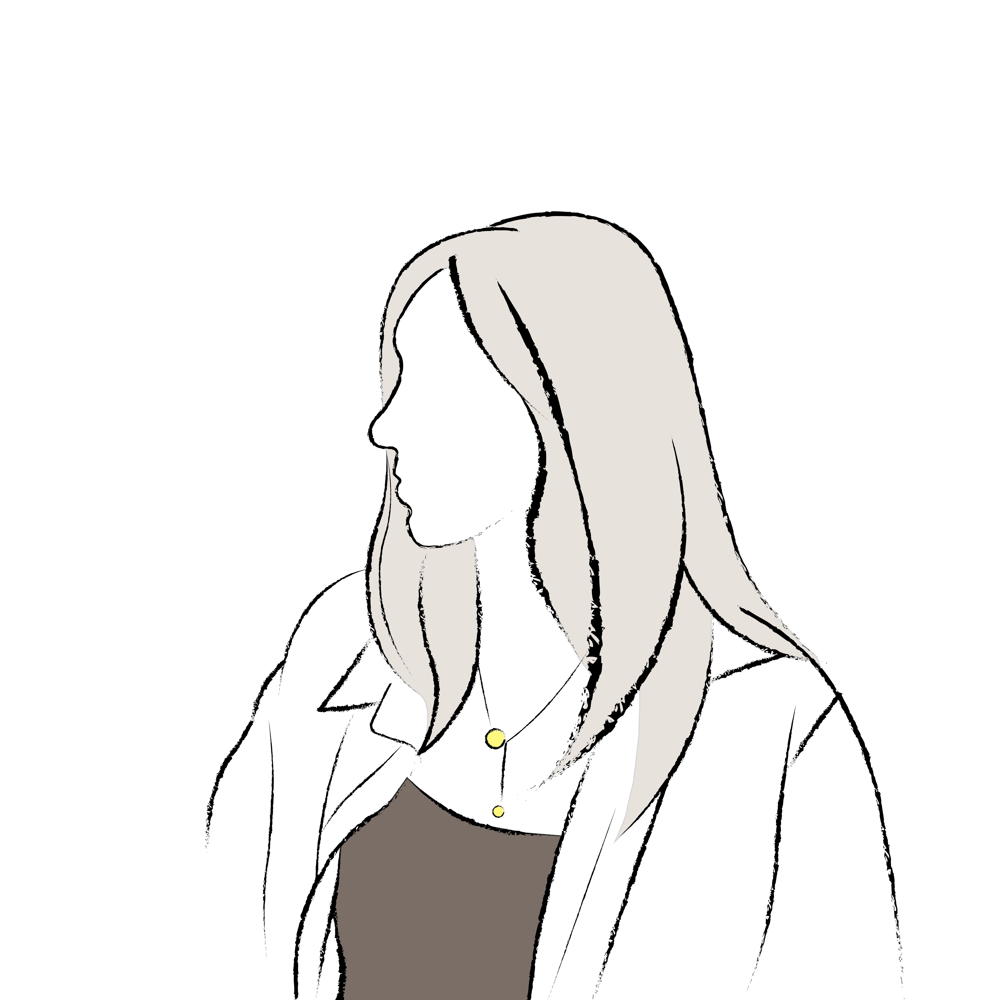

Hi, I’m Yi Hyun [ee /hjʌn/] – please don’t call me Yi.

I coded this website to illustrate different parts that constitute myself. But to give you a one sentence summary of myself, I would describe myself as a critical thinker that knows how to compromise.
What does this mean?
I am trained to view a single topic from multiple perspectives and degrees, making me a critical thinker. However, simply criticizing something does not bring about change. Under professional environments, it is necessary to make decisions and compromise. In any project that I'm involved in, I try my best to come up with the best solution that encompasses different perspectives.
If you want to know more about my background, go to the #background page for more information. It is a bit lengthy to explain everything in a single page.
My interests lie in energy policies, sustainability, and social disparities. I am a social scientist at heart, but I carry both strong qualitative and quantitative skills. You can view my experiences where I use these skills below.
Outside of work, I enjoy drawing, taking pictures, editing videos, and other creative activities. I also picked up bouldering during the start of Covid-19. You can view these by going to the #outside_work tab.
Feel free to reach out to me regarding any opportunities.